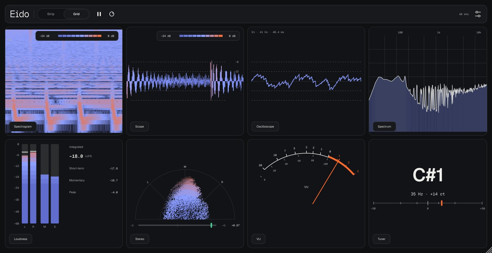
Eido — визуализатор и измеритель. Звук через плагин проходит без изменений: Eido только смотрит на сигнал.
Ставьте его последним на мастер-канал, чтобы видеть итог, или на любую дорожку, шину или возврат.
Нужен Mac с macOS 11 или новее, Apple Silicon или Intel. Плагин подписан без Apple Developer ID, поэтому ставится скриптом, который снимает карантин.
Нужен установленный gh (GitHub CLI):
cd ~/Downloads && rm -rf Eido-macOS Eido-macOS.zip && gh release download -R controloptioncommand/Eido-vst -p Eido-macOS.zip && unzip -q Eido-macOS.zip -d Eido-macOS && bash Eido-macOS/install-mac.sh
bash ~/Downloads/Eido-macOS/install-mac.sh. Скрипт кладёт Eido.vst3 в ~/Library/Audio/Plug-Ins/VST3, Eido.component — в ~/Library/Audio/Plug-Ins/Components.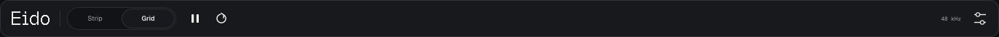
| Элемент | Что делает |
|---|---|
| Eido (логотип) | Открывает страницу About. Клик по маленькому логотипу там — назад, или клавиша Escape. С клавиатуры (Tab) логотип пропускается: About открывается через Настройки → About Eido. |
| Strip / Grid | Режим окна, см. ниже. |
| Пауза | Замораживает картинку всех модулей. Звук идёт как обычно, Integrated продолжает копиться. На паузе кнопка становится оранжевым треугольником. |
| Сброс | Круговая стрелка: обнуляет Integrated, LRA, удержание пиков и историю модулей. |
| 48 kHz | Частота дискретизации проекта. |
| Настройки | Appearance (тема), Layout (режим окна), Reset meters, Default modules (вернуть набор модулей по умолчанию), About Eido. |
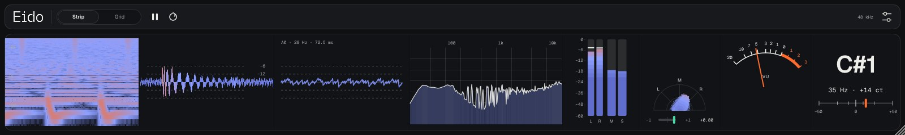
Окно тянется за правый нижний угол как угодно (минимум 560×170). Размер запоминается отдельно для Strip и Grid. Раскладка, модули в слотах, их настройки и размеры сохраняются в проекте вместе с плагином. Тема — общая для всех проектов.
В Eido восемь слотов, в каждый можно поставить любой из двенадцати модулей, в том числе один и тот же несколько раз.
Наведите курсор на модуль — снизу справа появятся стрелки ‹ ▲ ›. Нажмите ▲: откроется меню, модули в нём сгруппированы:
| Группа | Модули |
|---|---|
| Wave | Scope, Waves, Oscilloscope, Peak History |
| Spectrum | Spectrum, Mid / Side, Spectrogram |
| Loudness | Loudness, Loudness History, VU |
| Stereo and pitch | Stereo, Tuner |
Там же — Options (настройки модуля, если они есть) и Move left / Move right.
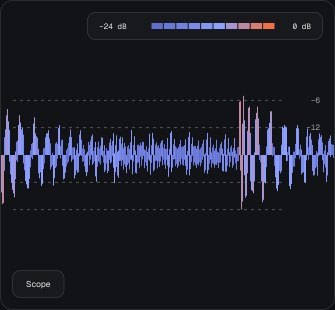
Плотная волна: одна вертикальная полоска на каждый пиксель ширины, от минимума до максимума сигнала за этот отрезок. Цвет — громкость по шкале −24…0 dB (легенда сверху справа): синий — тихо, оранжевый — у самого 0. Пунктирные линии — −6 и −12 дБ.
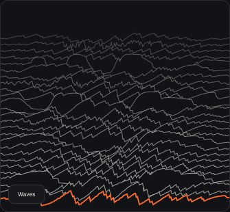
История волны «стопкой»: каждые 1/15 с новая линия появляется спереди, старые уезжают назад и бледнеют. Передняя оранжевая линия — текущий момент. Форма нормализуется, чтобы тихий сигнал тоже был виден.
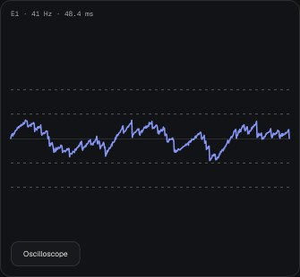
Несколько периодов волны, синхронизированных по высоте тона: для тонального звука картинка стоит на месте, и видно саму форму волны (синус, пила, перегруз). Окно — целое число периодов, примерно 8 мс; без тона — 20 мс. Сверху слева — нота, частота и длина окна. Линия меняет цвет по пику.
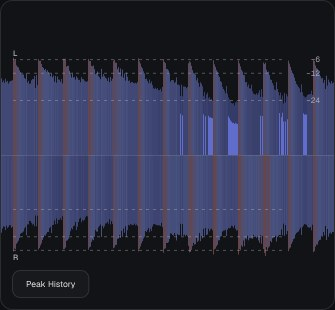
Лента громкости во времени, как волна в DAW: левый канал сверху, правый снизу. Светлая часть — пики, насыщенная — RMS (средняя громкость). Колонка — 20 мс. Шкала в децибелах (−48…0), пунктир −6, −12, −24 дБ. Удобно смотреть, как работает компрессор: при сильной компрессии пики и RMS почти сливаются.
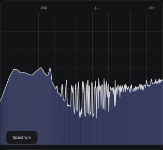
Спектр: по горизонтали частота 20 Hz…20 kHz, по вертикали уровень 0…−84 dB. Наведите курсор — сверху справа появится плашка: уровень, частота и ближайшая нота с отклонением в центах, например −8.1 dB · 111.1 Hz · A2 +17 ct.
Options → Slope: наклон 0, 3 или 4.5 дБ на октаву (по умолчанию 4.5). С наклоном розовый шум выглядит ровным, а сведённый трек — примерно горизонтальным; без наклона — «честные» децибелы.
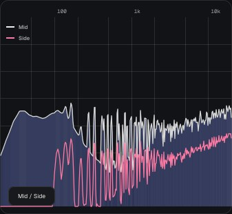
Два спектра на одном графике: Mid (середина, (L+R)/2) — светлой кривой с заливкой, Side (сторона, (L−R)/2) — розовой линией. Где розовая линия близко к светлой — там звук широкий; где далеко ниже — почти моно. Бас обычно держат в моно: Side на низах должен быть сильно ниже Mid. Наклон — тот же пункт Slope.
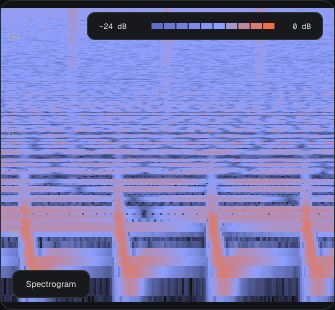
Спектр во времени: по горизонтали время (новое справа), по вертикали частота 20 Hz…20 kHz, цвет — громкость. Хорошо видны бочка (вертикальные вспышки внизу), тональные партии (горизонтальные полосы) и шипящие.
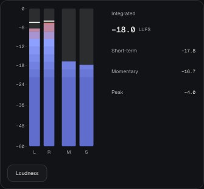
Главный измеритель громкости:
Громкость считается по ITU-R BS.1770-4 / EBU R128: K-фильтр, тишина тише −70 LUFS и тихие места на 10 LU ниже среднего в Integrated не попадают. Integrated копится и при закрытом окне плагина. Ориентиры: стриминги нормализуют примерно к −14 LUFS, эфир — −23 LUFS.
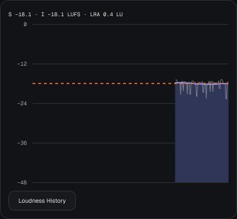
Громкость за последние 30 секунд: синяя линия с заливкой — Short-term, тонкая серая — Momentary, оранжевый пунктир — Integrated. Сверху — Short-term, Integrated и LRA (Loudness Range, диапазон громкости по EBU Tech 3342 — насколько различаются тихие и громкие части: 3–6 LU — плотная поп-музыка, 10+ LU — кино и классика).
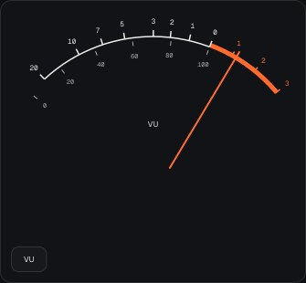
Стрелочный VU-метр, как на старых пультах: медленная стрелка (~300 мс) показывает среднюю громкость, а не пики. 0 VU = −18 dBFS RMS — привычный уровень для гейн-стейджинга: держите дорожки около 0 VU, и плагинам-эмуляциям железа будет комфортно. Красная зона — выше 0.
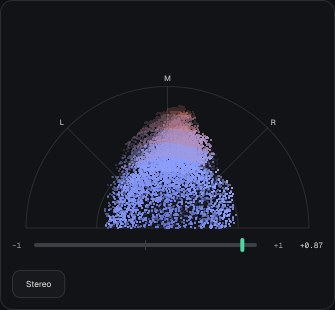
Полярный стереометр. Каждая точка — момент сигнала: по вертикали середина (M), влево — левый канал (L), вправо — правый (R); чем дальше от центра, тем громче (−40…0 dB). Моно — вертикальный столб, широкая стереокартинка — веер, звук только в одном канале — луч на L или R.
Внизу — корреляция от −1 до +1: около +1 — моно-совместимо, около 0 — очень широко, ниже 0 (метка оранжевая) — проблемы с фазой, в моно звук провалится.
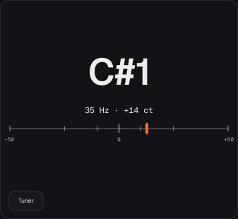
C5, D2, A#3 (до первой октавы — C4 = 261.6 Гц).4853 Hz, и отклонение от ноты в центах.Диапазон — примерно от 25 Гц до 5 кГц, точность — лучше 3 центов. Тюнер слушает сумму каналов и лучше всего работает с одним голосом или инструментом (бас, вокал, синт-лид); на аккорде или полном миксе он покажет самую сильную ноту, часто — бочку или бас. Когда тона нет, последняя нота остаётся бледной.
Options → Reference: эталон A4 = 432, 440, 442 или 444 Гц (по умолчанию 440).
Oxygen — светлая, Rubber — тёмная. Настройки → Appearance: Match system (следовать теме macOS), Oxygen или Rubber. Включённое в macOS «Уменьшить движение» останавливает анимацию Waves (обновляется только передняя линия).
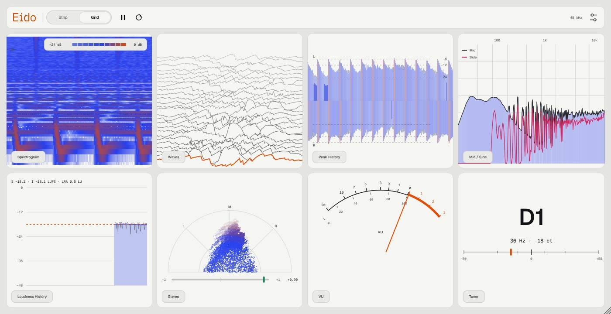
| Вопрос | Ответ |
|---|---|
| Плагин меняет звук? | Нет. Eido копирует сигнал в интерфейс и ничего не пишет обратно — тест сборки проверяет, что звук проходит бит в бит. |
| Integrated не сбрасывается между проигрываниями | Так и задумано: он копится, пока не нажмёте сброс. Нажимайте его перед проигрыванием трека целиком. |
| Тюнер прыгает на миксе | Тюнер рассчитан на одну ноту. Поставьте отдельный экземпляр Eido на нужную дорожку. |
| Short-term показывает −∞ первые 3 секунды | По стандарту Short-term — это окно 3 с; пока оно не заполнилось, значения нет. |
| Окно маленькое или большое | Тяните за правый нижний угол. Размер сохраняется в проекте отдельно для Strip и Grid. |
| Ableton не видит плагин | Проверьте, что включены Use VST3 Plug-In System Folders или Use Audio Units, и нажмите Rescan. Если macOS пишет, что плагин повреждён, запустите install-mac.sh ещё раз — он снимает карантин. |
Eido v1.1 · made by nnn · написан на C++ и JUCE 8. Шрифты Medeo — SIL Open Font License.
Исходники и релизы: github.com/controloptioncommand/Eido-vst